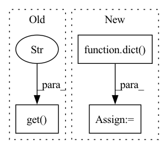

Pattern ID :26409
Before Change
else:
raise KeyError(f"can not find task meta data from {cfg.load_from}.")
elif train_data_cfg.get("new_classes"):
if model_meta.get("CLASSES" , False) :
dst_classes, _ = refine_cls(train_data_cfg, model_meta, adapt_type)
cfg.model.head.num_classes = len(dst_classes)
else:After Change
sampler_type = "balanced"
if len(set(model_classes) & set(dst_classes)) == 0 or set(model_classes) == set(dst_classes):
cfg.model.head.loss = dict(type="CrossEntropyLoss", loss_weight=1.0)
else:
cfg.model.head.loss = ConfigDict(
type="SoftmaxFocalLoss",
loss_weight=1.0,In pattern: SUPERPATTERN
Frequency: 3
Non-data size: 3
Instances Fragment ID: 79239627
Project Name: openvinotoolkit/model_preparation_algorithm
Commit Name: 791c40fccdb87fd5bd6fbd1d66ffe74db243f0b2
Time: 2022-07-11
Author: harim.kang@intel.com
File Name: mpa/cls/stage.py
M Class Name: ClsStage
N Class Name: ClsStage
M Method Name: configure_task(3)
N Method Name: configure_task(3)
M Parent Class: Stage
N Parent Class: Stage
M File Name: mpa/cls/stage.py
N File Name: mpa/cls/stage.py
M Start Line: 146
M End Line: 250
N Start Line: 150
N End Line: 243
Before Change
for label in model.cfg.get("labels", []):
self.textcat_per_cat[label] = ROCAUCScore()
else:
for label in model.cfg.get("labels" , []) :
self.textcat_per_cat[label] = PRFScore()
@propertyAfter Change
self.eval_punct = eval_punct
self.textcat = PRFScore()
self.textcat_f_per_cat = dict()
self.textcat_auc_per_cat = dict()
self.textcat_positive_label = None
self.textcat_multilabel = False
if pipeline: Fragment ID: 79239629
Project Name: explosion/spaCy
Commit Name: c0f4a1e43b5210ea631809ea590b486bca066d25
Time: 2020-06-11
Author: svlandeg@users.noreply.github.com
File Name: spacy/scorer.py
M Class Name: Scorer
N Class Name: Scorer
M Method Name: __init__(3)
N Method Name: __init__(3)
M Parent Class: object
N Parent Class: object
M File Name: spacy/scorer.py
N File Name: spacy/scorer.py
M Start Line: 91
M End Line: 110
N Start Line: 91
N End Line: 106
Before Change
for name, encoder in dataset.categorical_encoders.items()
if name in dataset.categoricals
}
embedding_sizes.update(kwargs.get("embedding_sizes" , {}) )
kwargs.setdefault("embedding_sizes", embedding_sizes)
new_kwargs = dict(After Change
Returns:
TemporalFusionTransformer
new_kwargs = dict(
max_encoder_length=dataset.max_encoder_length,
)
new_kwargs.update(kwargs)
// create class and return
return super().from_dataset( Fragment ID: 79239628
Project Name: jdb78/pytorch-forecasting
Commit Name: f8dcb364bda18a7651aea218661de68d3432c17b
Time: 2020-10-20
Author: beitner.jan@bcg.com
File Name: pytorch_forecasting/models/temporal_fusion_transformer/__init__.py
M Class Name: TemporalFusionTransformer
N Class Name: TemporalFusionTransformer
M Method Name: from_dataset(3)
N Method Name: from_dataset(3)
M Parent Class: BaseModelWithCovariates
N Parent Class: CovariatesMixin,BaseModel
M File Name: pytorch_forecasting/models/temporal_fusion_transformer/__init__.py
N File Name: pytorch_forecasting/models/temporal_fusion_transformer/__init__.py
M Start Line: 348
M End Line: 388
N Start Line: 336
N End Line: 338